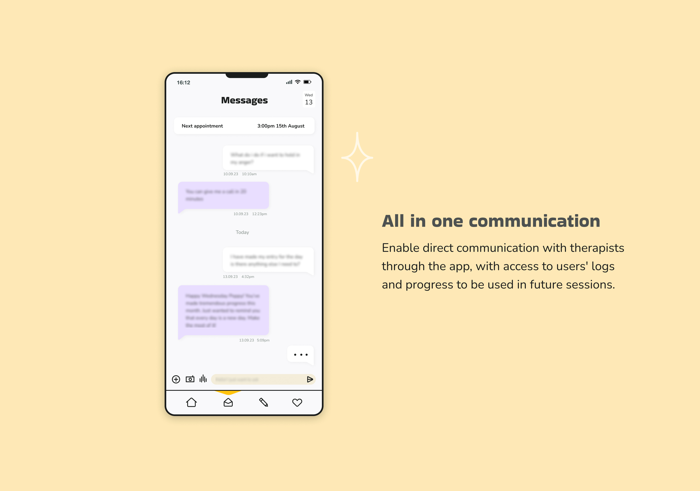
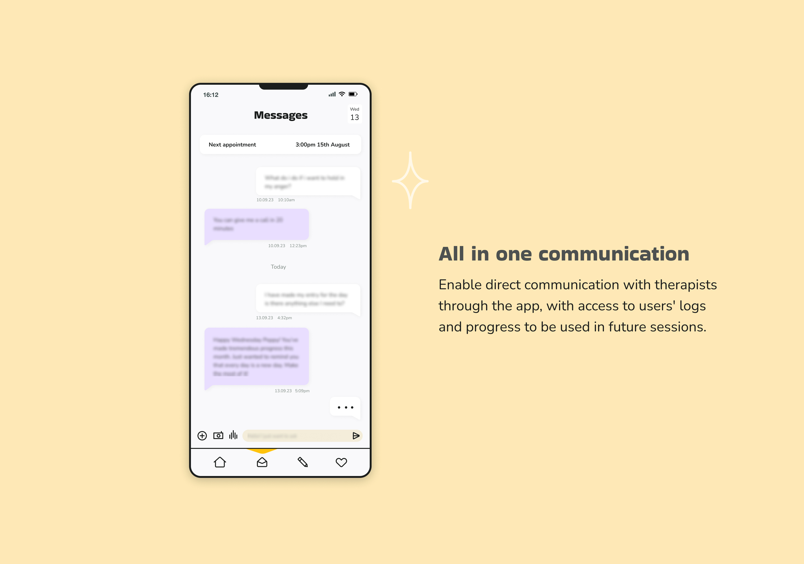
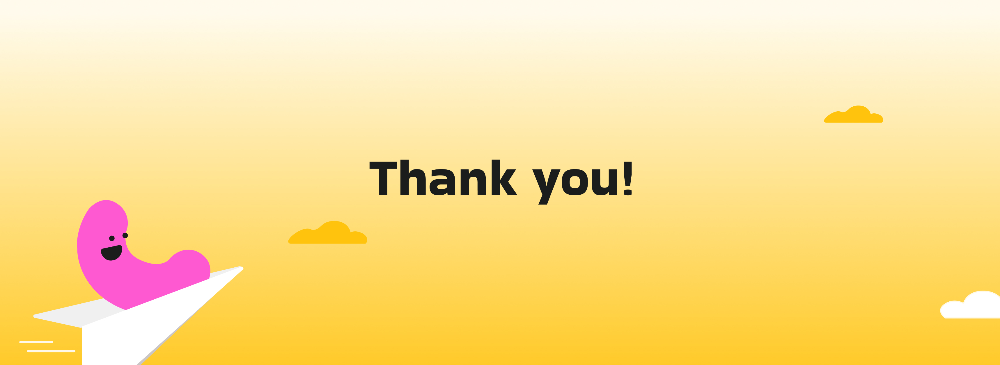
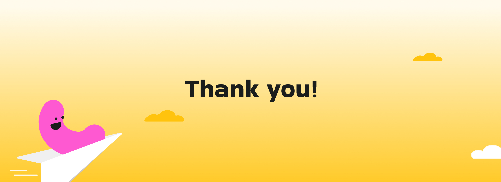

02
HappyHearts therapy app: Case study
Product Design
Mobile App
Education
Health & wellness
In a world filled with challenges and changes, every child deserves a safe, engaging and supportive space to navigate their emotions and discover the joy of personal growth. HappyHearts is more than just an app; it's a bridge connecting children and therapists, fostering communication, and facilitating personal development.
Context
A lot of children do not have the resources and have a hard time understanding and expressing their feelings. Having a healthy mind starts from when we are kids. This app is all about helping young minds and their therapists team up, it is like a trusty sidekick, making it easy to share thoughts with user’s therapist. Journalling has been proven to help with mental health, but what about in this era with digital screens? Therapists can really get what's going on with their little clients, see how they are doing, and figure out how to make things even better.
The challenge
1
How do I strike a balance between friendly and
inviting interface while maintaining a professional and therapeutic environment?
2
How do I make the app engaging and intuitive while still offering a secure and confidential space for therapy?
3
How do I cater to a wide age range of young users, from very young children to teenagers, each with their own set of needs and preferences.
4
How do I provide effective communication channels for therapists and children, fostering trust and privacy without overwhelming the users?
Research objectives
1
Foster emotional growth and provide a safe and support digital space for therapy.
2
Define user’s emotional, psychological and developmental needs of children in different ages.
3
Investigate strategies
to maintain young users’ engagement and motivation with
therapy apps.
4
Define impact of gamification elements on engagement and therapeutic outcomes.
What's out there?
Who is it going to be for?

Ideate
The design approach is rooted in empathy, prioritizing the emotional well-being of young users. The aim is to create an intuitive interface, employing engaging elements such as gamification, interactive activities, and customizable avatars that make therapy sessions fun and relatable for children. The ideation revolves around refining the user journey, ensuring that navigation is simple and reassuring, fostering a sense of comfort and trust. We also explore features that facilitate secure and open communication between children and therapists, emphasizing a goal of enhancing the therapeutic relationship.
User flow

Low fidelity sketches
Quick sketch of what the main flow will look like, focusing on: daily logging, dashboard, inbox and home page.
Mid fidelity refinement
As we move into the mid-fidelity stage of the UX design, the main focus is to take the user flow sketch above and really flesh out the individual elements to make the user experience more robust and engaging for our young users.
Visual identity
A platform that exudes a warm and inviting tone. Carefully selected colors that evoke comfort and trust as well as serve as a free playground. Included playful illustrations and engaging graphics to make it feel like an exciting adventure rather than just another app. These visuals are carefully crafted to resonate with kids to spark their curiosity.
Illustrations
The use of colors and shapes, including blobs or simple geometric forms, is a widely recognized and effective method for retaining information in children's education and cognitive development. Colors have psychological and emotional connotations and they stimulate the visual senses and capture a child's attention. While shapes are basic forms that children learn to recognize at an early age. Combining both engages multiple sensory and enhances the encoding of information in memory.
Introducing HappyHearts

 


 
